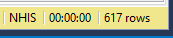
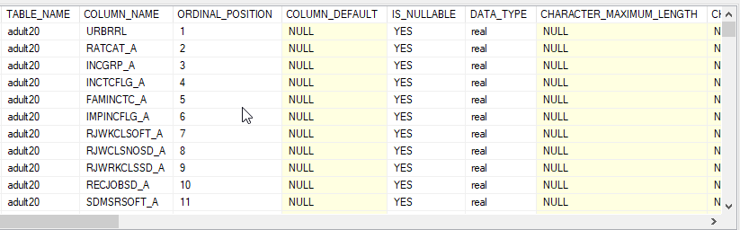
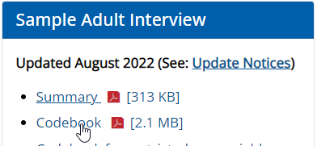
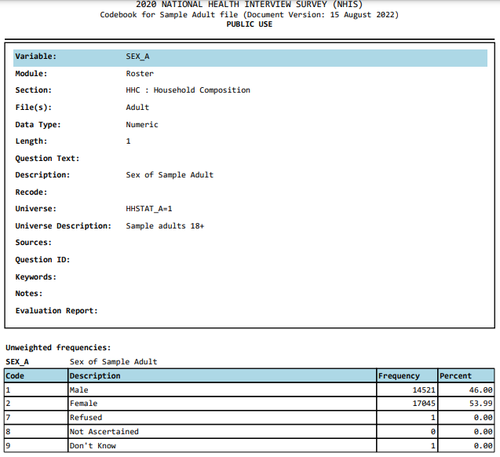

National Health Interview Survey
The National Health Interview Survey (NHIS) has monitored the health of the nation since 1957. NHIS data on a broad range of health topics are collected through personal household interviews. Survey results have been instrumental in providing data to track health status, health care access, and progress toward achieving national health objectives.
The National Center for Health Statistics provide annual national estimates of selected health topics for adults
aged 18 years and over based on final data from the National Health Interview Survey.
Estimates can be grouped by characteristics such as age, race, or sex.
However, if a person would like to know how the people surveyed are distributed, they would not be able to do it.
Ask:
The first step is to determine what informaiton is needed.
I'll analyse the survey responses to determine how the US 2020 diabetic population is distributed:
Prepare:
This dataset was downloaded from the CDC's National Center for Health Statistics website as a CSV file.
It contains the 2020 adults survey responses.
You can access the dataset by clicking on this link:
2020 NHIS
I imported the CSV file into SQLServer to clean and analyse the data.
Process:
I first wanted to check how many columns were in the dataset and their information:
-- To check columns information
SELECT
*
FROM
INFORMATION_SCHEMA.COLUMNS
WHERE
table_name = 'adult20'I found there were 317 columns in the dataset and they were real data type.

I used the 2020 NHIS codebook to find which columns I would need for the Analysis:

-- To get the columns I need for the analysis
SELECT
SEX_A AS Gender,
HISPALLP_A AS Race,
DIBEV_A AS Diagnosed_Diabetes,
DIBTYPE_A AS Diabetes_type,
EDUC_A AS Education_level,
INCGRP_A AS Family_income
FROM
adult20
I chose to save the results into a new table as the original dataset can be used to analyse other medical conditions.
-- To check for null values
SELECT
*
FROM
Diabetes_Adult
WHERE
Gender IS NULL OR
Race IS NULL OR
Diagnosed_Diabetes IS NULL OR
Diabetes_type IS NULL OR
Education_level IS NULL OR
Family_income IS NULL
-- To alter column types, it was done with all the columns
ALTER TABLE Diabetes_Adult
ALTER COLUMN Gender nvarchar(255)
-- To change Gender column values
UPDATE Diabetes_Adult
SET Gender = CASE WHEN Gender = '1' THEN 'Male'
WHEN Gender = '2' THEN 'Female'
WHEN Gender = '7' THEN 'Refused'
WHEN Gender = '9' THEN 'Dont Know'
ELSE Gender
END
-- To change Race column values
UPDATE Diabetes_Adult
SET Race = CASE WHEN Race = '1' THEN 'Hispanic'
WHEN Race = '2' THEN 'White only'
WHEN Race = '3' THEN 'Black/African American only'
WHEN Race = '4' THEN 'Asian only'
WHEN Race = '5' THEN 'American Indian/Alaska Native only'
WHEN Race = '6' THEN 'American Indian/Alaska Native and any other group'
WHEN Race = '7' THEN 'Other single and multiple races'
WHEN Race = '97' THEN 'Refused'
WHEN Race = '98' THEN 'Not Ascertained'
WHEN Race = '99' THEN 'Dont Know'
ELSE Race
END
-- To change Diagnosed_Diabetes column values
UPDATE Diabetes_Adult
SET Diagnosed_Diabetes = CASE WHEN Diagnosed_Diabetes = '1' THEN 'Yes'
WHEN Diagnosed_Diabetes = '2' THEN 'No'
WHEN Diagnosed_Diabetes = '7' THEN 'Refused'
WHEN Diagnosed_Diabetes = '8' THEN 'Not Ascertained'
WHEN Diagnosed_Diabetes = '9' THEN 'Dont Know'
ELSE Diagnosed_Diabetes
END
-- To change Diabetes_type column values
UPDATE Diabetes_Adult
SET Diabetes_type = CASE WHEN Diabetes_type = '0' THEN 'Dont have diabetes'
WHEN Diabetes_type = '1' THEN 'Type 1'
WHEN Diabetes_type = '2' THEN 'Type 2'
WHEN Diabetes_type = '3' THEN 'Other type of diabetes'
WHEN Diabetes_type = '7' THEN 'Refused'
WHEN Diabetes_type = '8' THEN 'Not Ascertained'
WHEN Diabetes_type = '9' THEN 'Dont Know'
ELSE Diabetes_type
END
-- To change Education_level column values
UPDATE Diabetes_Adult
SET Education_level = CASE WHEN Education_level = '0' THEN 'Never attended/kindergarten only'
WHEN Education_level = '1' THEN 'Grade 1-11'
WHEN Education_level = '2' THEN '12th grade, no diploma'
WHEN Education_level = '3' THEN 'GED or equivalent'
WHEN Education_level = '4' THEN 'High School Graduate'
WHEN Education_level= '5' THEN 'Some college, no degree'
WHEN Education_level= '6' THEN 'Associate degree: occupational, technical, or vocational program'
WHEN Education_level= '7' THEN 'Associate degree: academic program'
WHEN Education_level= '8' THEN 'Bachelors degree (Example: BA, AB, BS, BBA)'
WHEN Education_level= '9' THEN 'Masters degree (Example: MA, MS, MEng, MEd, MBA)'
WHEN Education_level= '10' THEN 'Professional School degree (Example: MD, DDS, DVM, JD)'
WHEN Education_level= '11' THEN 'Doctoral degree (Example: PhD, EdD)'
WHEN Education_level= '97' THEN 'Refused'
WHEN Education_level= '98' THEN 'Not Ascertained'
WHEN Education_level= '99' THEN 'Dont Know'
ELSE Education_level
END
-- To change Family_income column values
UPDATE Diabetes_Adult
SET Family_income = CASE WHEN Family_income = '1' THEN '$0 to $34,999'
WHEN Family_income = '2' THEN '$35,000 to $49,999'
WHEN Family_income = '3' THEN '$50,000 to $74,999'
WHEN Family_income = '4' THEN '$75,000 to $99,999'
WHEN Family_income = '5' THEN '$100,000 or greater'
WHEN Family_income = '8' THEN 'Not Ascertained'
ELSE Family_income
END
Analyse:
I analyzed the dataset in SQLServer:
-- To check how many people were surveyed
SELECT
COUNT(Gender)
FROM
Diabetes_Adult
-- To check how many diabetic patients were surveyed
SELECT
COUNT(Diagnosed_Diabetes)
FROM
Diabetes_Adult
WHERE
Diagnosed_Diabetes = 'Yes'
-- To check how the patients are distributed by gender
SELECT
Gender,
COUNT(Diagnosed_Diabetes) AS Patients_By_Gender
FROM
Diabetes_Adult
WHERE
Diagnosed_Diabetes = 'Yes'
GROUP BY
Gender
ORDER BY
Patients_By_Gender DESC
-- To check what race do most diabetic patients belongs to
SELECT
TOP 1
Race,
COUNT(Diagnosed_Diabetes) AS Patients_By_Race
FROM
Diabetes_Adult
WHERE
Diagnosed_Diabetes = 'Yes'
GROUP BY
Race
ORDER BY
Patients_By_Race DESC
-- To check what diabetes type do most diabetic patients belongs to
SELECT
TOP 1
Diabetes_type,
COUNT(Diagnosed_Diabetes) AS Patients_By_Diabetes_type
FROM
Diabetes_Adult
WHERE
Diagnosed_Diabetes = 'Yes'
GROUP BY
Diabetes_type
ORDER BY
Patients_By_Diabetes_type DESC
-- To check what family income do most diabetic patients belongs to
SELECT
TOP 1
Family_income,
COUNT(Diagnosed_Diabetes) AS Patients_By_Family_income
FROM
Diabetes_Adult
WHERE
Diagnosed_Diabetes = 'Yes'
GROUP BY
Family_income
ORDER BY
Patients_By_Family_income DESC
-- To check what education level do most diabetic patients belongs to
SELECT
TOP 1
Education_level,
COUNT(Diagnosed_Diabetes) AS Patients_By_Education_level
FROM
Diabetes_Adult
WHERE
Diagnosed_Diabetes = 'Yes'
GROUP BY
Education_level
ORDER BY
Patients_By_Education_level DESC
Share:
I saved the dataset into a CSV file and imported the data into Power BI.
I created a new measure to have the total number of diabetic patients available in Power BI.
I created the visualizations in Power BI to share the findings.
Insights:
Male: 1636
Dont Know: 1
You can utilize the interactive Power BI dashboard here: